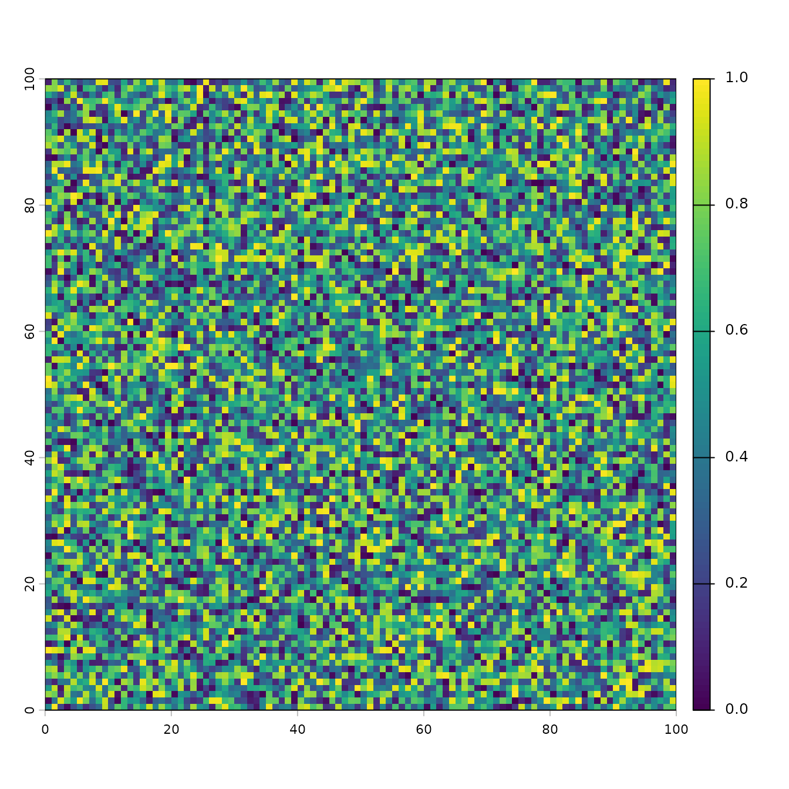
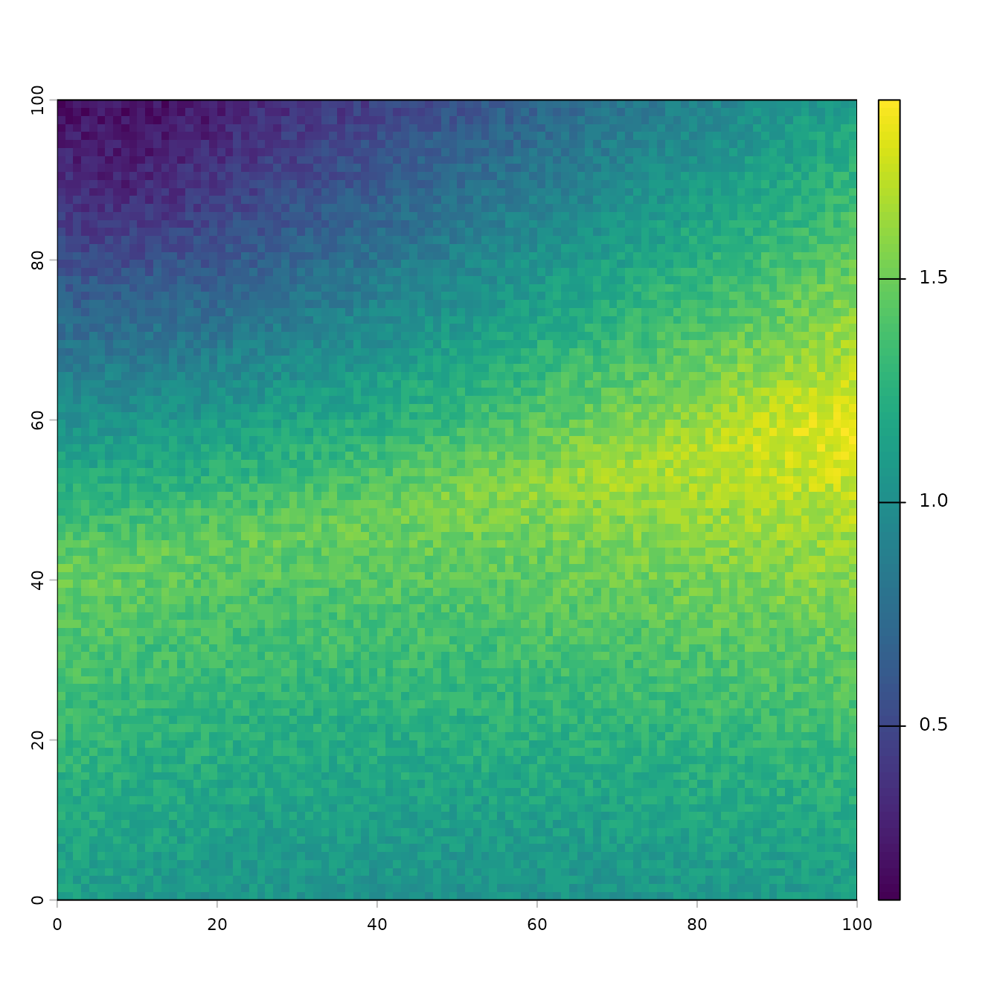
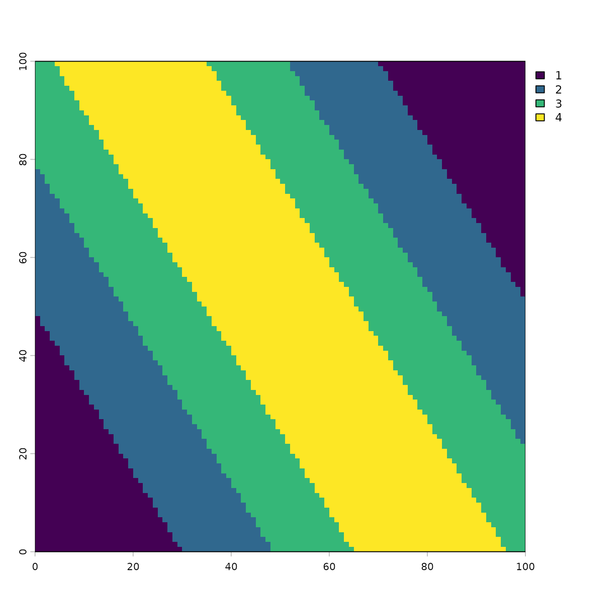

Basic Usage of NLMR
Marco Sciaini, Craig E.Simpkins, Jakub Nowosad
2026-11-12
Source:vignettes/getstarted.Rmd
getstarted.RmdNLMR is an R package for simulating neutral landscape
models (NLMs): synthetic landscapes used to explore landscape-scale
ecological patterns and processes. The package follows the same general
idea as the Python package NLMpy (see Etherington et al. 2014), but returns
results as SpatRaster objects so they can be used directly
with terra and other raster workflows. Most of the common
NLMs described in the literature are available. The package also
includes tools for classifying continuous outputs into categories.
For more background on neutral landscape models and the package design, see the accompanying publication Sciani, Fritsch, Scherer and Simpkins (2018).
Quickstart
NLMR exposes 15 exported landscape-generation functions
covering 16 algorithm variants. The variants span a spectrum of spatial
structure, from spatially random landscapes (nlm_random)
through intermediate patterned forms to deterministic planar gradients
(nlm_planargradient) (see Palmer
1992). The curdling generator, nlm_curds(), can
produce either random curdling or wheyed curdling, which is why the
package has one more algorithm variant than exported function. For a
full browseable catalog of generators, use
catalog_nlm().
The plot below shows a basic random landscape with no intentional spatial structure.
A simple random landscape can be generated like this:
x <- NLMR::nlm_random(ncol = 100, nrow = 100)
terra::plot(x)
Combining landscapes
NLM rasters can be combined to create new landscape patterns. A base raster can be added to one or more secondary rasters, with optional scaling factors controlling how strongly each secondary raster contributes. This example combines a gradient with random variation to create a more complex surface.
base <- NLMR::nlm_edgegradient(ncol = 100, nrow = 100)
secondary_1 <- NLMR::nlm_distancegradient(
ncol = 100,
nrow = 100,
origin = c(10, 10, 10, 10)
)
secondary_2 <- NLMR::nlm_random(ncol = 100, nrow = 100)
combined <- base + (secondary_1 + secondary_2 * 0.2)
terra::plot(combined)
Classifying categories
Landscape rasters generated by NLMR are continuous by
default and often fall between 0 and 1. Use
landscape_classify() to convert a continuous raster into
categorical classes when you want a discrete landscape representation.
This example turns a continuous gradient into four discrete classes.
continuous <- NLMR::nlm_edgegradient(ncol = 100, nrow = 100)
classified <- landscape_classify(continuous, n = 4)
terra::plot(classified)